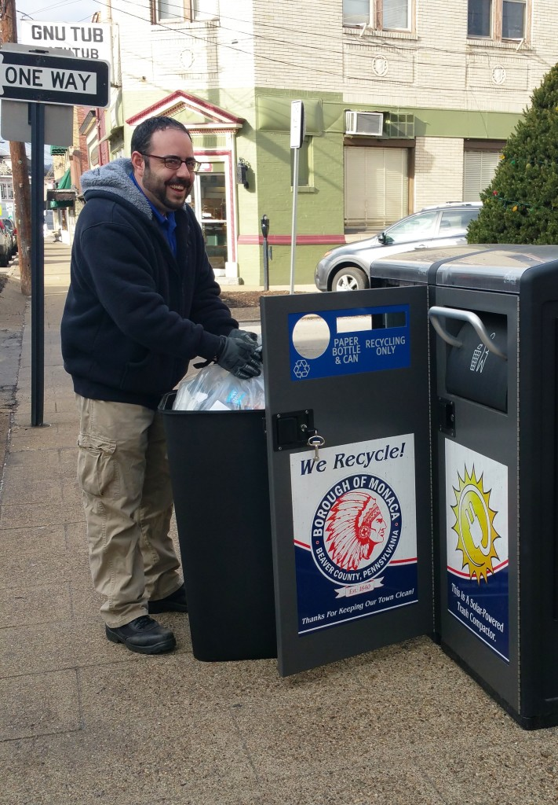

Çalisma ve Araç Verimliligi
senin kamusal alan atik ve geri dönüsüm yerleri Servis kurulusunuzun karsi karsiya oldugu en yogun kaynak islemleri biridir. Ya hiçbir sorun alanlari vardir saglamak veya zar ve tasmalari ve çöp sorunlari bir alana bela zaman sikayetleri duymak asiri toplayabilir. Ama Bigbelly Akilli Atik ve Geri Dönüsüm Sistemi ile, oyunun isi sansa birakmaz ve just-in-time toplama felsefesi geçin. Bu, diger acil ihtiyaçlarina emegi aktarmak ve CO2 üreten araçlarin biraz daha sik park, bu gaz yakan tutmak anlamina gelir. Eger Bigbelly Sistemi gücüne eklediginizde ve sokaklara vurmak için ihtiyacinizi kurucu memnuniyet havai fisekler ise zoka olacaktir.
